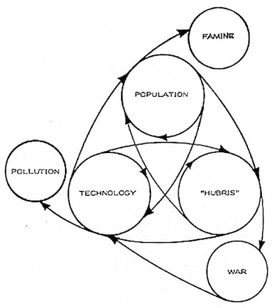

THEORIZING 21C
CTheory Interview: Hubris or the Myth of Power
Colin J. Campbell in conversation with Gad Horowitz
In his labyrinthine classic Steps to an Ecology of Mind, Gregory Bateson redefines hubris as the "lack of systemic wisdom," the tragic blindness that occurs when any part of an ecological system ignores the fact that it is participating in a system larger than itself, one upon which its very existence is predicated.[1] The extent to which Gregory Bateson's work, like that of Bataille, Levinas, and Lacan, addresses this tragic dimension more explicitly than Korzybski and Marcuse is a subject of debate. This debate does not end by taking sides and aims to deepen, rather than qualify, the radicalism of General Semantics and Critical Theory.
Colin Campbell: Gad, I wanted to begin by talking with you about a very broad topic. I have been reading a great deal about cybernetics and what it says about the 'noisiness' of what is going on. I can be more precise in citing Gregory Bateson in Steps to an Ecology of Mind in the essay called "Cybernetic Explanation":
Causal explanation is usually positive. We say that billiard ball B moved in such-and-such a direction because billiard ball A hit it at such and such an angle. In contrast to this, cybernetic explanation is always negative... In cybernetic language, the course of events is said to be subject to restraints, and it is assumed that, apart from such restraints, the pathways of change would be governed only by an equality of probability.[2]
What I am drawn to is the notion that consciousness is something that operates in terms of restraints and constraints and elimination of background noise--in a word, of abstraction--rather than perfect mirroring or creation ex nihilo. And this necessarily indicates a limit to consciousness, to the importance or even the predominance of the unconscious. And this in turn has reminded me of our earlier discussion in CTheory about psychoanalysis and Marcuse's hope.
Gad Horowitz: For Freud and Marcuse what is repressed in the unconscious are erotic and aggressive drives. When we spoke twelve years ago I was breathing the atmosphere of Marcuse. More recently I have been breathing the atmosphere of Bataille, of Levinas, and Lacan for whom radical alterity, rather than Eros, is the issue.
For Lacan the human being is not only an erotic being; she is also a linguistic being. What is repressed as the unconscious is not some kind of animal-space-binding drive for pleasure. What is repressed in the unconscious, when the human being becomes a linguistic being (which she is very early on in her life), is the 0ther with a capital Zero. This is a kind of terrifying abyss that lies beneath human consciousness.
It is characterized from Levinas' point of view by the imperative of excessive altruism. From Bataille's point of view it is characterized by the insistence of an excessive expenditure, sacrifice, suicide-homicide. So that the human being at her core is psychotic. What's repressed is not exclusively a libidinal core, but a psych-0-tic core: all human beings, to the degree that repression is successful, perhaps never encounter more than a hint of it in their lives. But the saints and the devils, the mystics and the mass-murderers, represent possibilities of human nature that are in some sense the essence of human nature.
Colin Campbell: But Bataille also said that,
The lowliest and least cultured human beings have an experience of the possible--the whole of it even--which approaches that of the great mystics in its depth and intensity. It only takes a certain energy, which is not infrequently available, at least in the first years of adulthood.[3]
I found this to be one of the most radically democratic moments in a book which is otherwise not especially or exclusively democratic.
Gad Horowitz: That's true. And Lacan makes the distinction between the phallic jouissance which is a limited jouissance, which is never satisfied, and what he calls towards the end of his career a jouissance of the Other, with a capital 'O', which is a kind of absolute, excessive jouissance, in which the distinction between pleasure and pain approaches meaninglessness.
Lacan mentions the famous painting of Theresa of Avila being pierced by arrows. And this immediately brings to mind Bataille's obsession with the awful photograph of the Chinese man being tortured to death, which I could never understand. Lacan is helping me to understand it. It seems Bataille was an unacknowledged influence on Lacan.
Colin Campbell: Didn't Lacan marry Bataille's wife?
Gad Horowitz: That's right. Pillow talk. Maybe terrifying pillow talk... And so now I also have a problem with Korzybski. While he was fully aware that the human being was a linguistic being and emphasized very much the leap from biological space-binding to linguistic time-binding, he probably had no idea of the traumatic quality of that leap. This makes the problem of achieving sanity a lot more difficult than even he thought it was, because the obstacle is no longer just the human tendency to copy animals, but this traumatizing abyss or gap.
Between the animal space-binder and the time-binder there is a gap which Levinas and Lacan would call the Other or the Real. I don't think Korzybski had any idea of it. I think the whole General Semantics approach, powerful as it is, has a weakness. And if we want to deal with it, we need to enter these murkier and more painful depths. That doesn't mean, by the way, that I am giving up one bit on General Semantics.
The problem for me now is how to come to terms with the human's ambivalent attraction/terror of return to their traumatic origin, the drive to what Bataille calls expenditure, to bursting through the boundaries of separate self, whether by self-immolation or self-maximization, especially in war. Bataille: "The desire to be consumed for no reason other than desire itself--to burn." What his disciple What his disciple Nick Land calls "the thirst for annihilation." This is the problem William James began to approach in his classic, The Moral Equivalent of War."
Colin Campbell: Gregory Bateson talks about the myth of power:
They say that power corrupts but this, I suspect, is nonsense. What is true is that the idea of power corrupts. Power corrupts most rapidly those who believe in it, and it is they who will want it most. Obviously our democratic system tends to give power to those who hunger for it and gives every opportunity to those who don't want power to avoid getting it. Not a very satisfactory arrangement if power corrupts those who believe in it and want it.
Perhaps there is no such thing as unilateral power. After all, the man "in power" depends on receiving information all the time from outside. He responds to that information just as much as he "causes" things to happen. It is not possible for Goebbels to control the public opinion of Germany because in order to do so he must have spies or legmen or public opinion polls to tell him what the Germans are thinking. He must then trim what he says to this information and then again find out how they are responding. It is an inter-action, and not a lineal situation.
But the myth of power is, of course, a very powerful myth and probably most people in this world more or less believe in it. It is a myth which, if everybody believes in it, becomes to that extent self-validating. But it is still epistemological lunacy and leads inevitably to various sorts of disaster.[4]
Gad Horowitz: The myth of power is the fantasy of total mastery/submission that arises to fill this gap that I am talking about. The space of the 0ther is where the myth of power arises. Animals don't have the myth of power. It is something distinctively and essentially human. But neither Bateson nor Korzybski had any idea of the depth of this problem, which is impressing me today.
Do my revolutionary friends not suffer from the myth of power? Do the tiqqunistas not suffer from the myth of power? "I am with you, revolutionary friends," I said on Facebook, "just please don't kill the Czar's children this time." It's no mere cognitive defect, which I think it is for both Korzybski and Bateson. It's something the "epistemological lunacy" feeds on--this trauma, what Freud called the death instinct--which is the starting point of Lacan's "return to Freud."
When Marcuse grappled with the death instinct in Eros and Civilization--the theoretical manipulations that he got into trying to argue that, well, in the end it's not such a problem...
Colin Campbell: But I think it was a problem in Eros and Civilization. The concluding words to that text are almost as tentative and ambiguous as the final words of Freud's Civilization and its Discontents.
Gad Horowitz: That's right. That's true. However, for Marcuse the death instinct is still largely about aggression, and when it's not about aggression, it's about sinking into a primeval oneness.
Colin Campbell: The "nirvana" principle.
Gad Horowitz: So that element of trauma is occluded. I think maybe the first analyst to seriously deal with it was Otto Rank, who theorized about the trauma of birth. I have never read him, but if I did I suspect I would find that for him it's a biological thing, something that characterizes the human being as an erotic being who wants an erotic merger with mother, pre-birth. Rank doesn't have this angle on the 0ther as an abyss which opens up between the biological and the linguistic.
Colin Campbell: What you are saying reminds me of something G. K. Chesterton said in his book on St. Francis of Assissi: "There is a bias in man like the bias in the bowl."
Gad Horowitz: Hmmm. And Levinas talks about "the curvature of inter-subjective space."
Colin Campbell: So maybe we're saying that Korzybski is underestimating the degree to which we have to account for the curve.
Gad Horowitz: Yes, underestimating it or maybe not aware of it at all, because there is no room in his scheme of "classes of life" for a kind of abyss between the space-binder and the time-binder.
Let's put a different angle on it. Some evolutionary anthropologists will say that, in the process of hominization, the primate dominance relation was replaced by an egalitarian hunter-gatherer scene where in their very small communities human beings could keep one another in check. Not so much that we were naturally loving and co-operative, we also had this tendency to grandiosity and to worthlessness, its moebius flipside--a moebius which no other animal has. This could express itself in the "big man" taking over, but that was not allowed to happen if a group was small enough and technologically backward enough that they could keep one another other in check.
Colin Campbell: So that any time the grandiosity appeared, its flipside of worthlessness was right there--was brought to attention...
Gad Horowitz: Well, yes, and in terms of politics whatever "big man" appeared was immediately slapped down. Maybe exiled, or ostracized, or even killed. But then--and here I refer to Eli Sagan's book At the Dawn of Tyranny--
Colin Campbell: What a book!
Gad Horowitz: What a book. I had a silly debate with him at the time; I was trying to avoid what he was trying to say there, that the advent of tyranny results from a failure of repression rather than from surplus repression. So that at a certain scale of human development, the "big man" takes over to the max. The god-king at the dawn of tyranny, with absolute power over everyone and everything.
Colin Campbell: The birth of the myth of power...
Gad Horowitz: Compare Freud's myth of the primal father--and then there is a slow evolution from the god-kings of the ancient world to what we have now.
Colin Campbell: Yes, a "complex" primitive society forms, ultimately giving rise to the first "democratic" experiments in the western tradition, then post-classical imperialism and feudalism, and finally modern mass-democracy.
Gad Horowitz: Sagan is saying that in gatherer-hunter society this drive to excess is repressed, and that when humanity achieves a certain scale in terms of population and technology, the drive manifests and embodies itself in the figure of the god-king, human sacrifice, slavery...
Colin Campbell: This is hubris?
Gad Horowitz: This is hubris.
Colin Campbell: So hubris is both trauma and the denial of trauma. Whereas maybe what existed before the dawn of tyranny, was an open and even institutionalized "experience" or unconscious acknowledgement of the trauma as such--and on that ground only its repression. Could we call this "basic repression"?
Gad Horowitz: Yeah, we could call that "basic repression." But that's getting ahead of me, because I have yet to do this work of arranging a rapprochement between my Marcusean and Lacanian discourses.

Colin Campbell: I have been thinking that Bateson presumed, implicitly, the distinction Marcuse makes explicit in Eros and Civilization between basic and surplus repression. I think it is demonstrated in the function of hubris in his diagram of the dynamics of the ecological crisis.[5]
Bateson said that any two of the core elements of the system (population-technology-hubris) could be preserved without destruction of the biosphere. Evidently, one could imagine a high-tech hubristic future with a small population, or a Mad-Max type return to lower technology with a large warlike population. But if we keep his critique of the myth of power in mind, it seems quite clear that he would prefer to eliminate hubris and preserve technological science and a large human population. This is to say that he believes, along with Marcuse, that a technologically-sophisticated and burgeoning human population could survive by fundamentally changing its orientation, by removing hubris from its epistemological toolkit, or in Marcuse's terms, undertaking that complex process of rediscovering basic repression by casting off surplus repression characteristic of hubristic, "big man" societies.
Gad Horowitz: Well I am going to have to work more on the distinction between basic and surplus repression, because in Lacanian terms it's basic repression, not surplus repression, that's the essential human problem. I am going to want to revise that, but I don't quite know how. Because it's basic repression that characterizes the linguistic being--it's the repression of any experience of the abyss of this trauma, it's not a repression of the drive for pleasure. Marcuse is saying there is surplus repression of our desire for pleasure, and in an advanced civilization, pleasure can be released to some significant extent. And now Lacan is giving me a problem with that.
Here's one way of formulating the problem. To abolish surplus repression is to abolish the mind-body split, to end the domination of the pleasure-seeking body by the conceptualizing mind (this can easily be translated into Korzybskian terms.) The liberation of the erotic being. But the Lacanian problem, the problem of basic repression behind humanization, is about the split between the body-mind and the Other or the Real. Hence Lacan's $, the barred subject or split subject as the linguistic being. For Lacan, liberation means acceptance of this basic repression, which can deliver freedom from the myth of power.
In the 60s--of which Bateson, Marcuse, and I were part--they didn't carry portraits of Bateson around in the streets of Paris, they carried around portraits of Marcuse. And why was that? Because Marcuse was more sympathetic to revolutionary fervor, where Bateson would immediately have seen the problem with it--that is, involvement with the myth of power. And although I was very taken by that ethos of love and flowers--and I say that with only a little bit of embarrassment, I really did believe it and I really did live it, to a certain extent--at the same time I was older than your run-of-the-mill hippie, and the constant, contemptuous reference to the "straights," and the constant spitting at the "pigs" in those days bothered me even then. But I would, you know, immediately let it pass. I thought it was extraneous and unimportant.
Colin Campbell: I feel really with you on this question, perhaps with a forty-year time delay.
Gad Horowitz: It's always happening, isn't it? The contempt for the adversary, spitting at the enemy; not just the personification of evil, the reification of evil. "We are love, they are hate." So that in the 60s, a beautiful young woman was offering a flower to a heavily-armed policeman, that flower was...
Colin Campbell: ...an accusation?
Gad Horowitz: It was an accusation, it was a way of shaming--at best it was a seduction, "come over to our side." But there isn't any real understanding there of the moebius of revolution and counter-revolution.
When I was younger, before I became radicalized by the 60s and by the Vietnam war, I was a student of the elite theory of the Machiavellians, Mosca, and Michels. At the time I read a very brief essay entitled "Masters Old and New" by Max Nomad, published by V. F. Calverton in 1937 in a book called The Making of Society, in the Modern Library. He writes that every revolution produces a new class of masters and he's OK with that, because he is going to support every revolution as it comes along. He's always going to punch his fist in the air for whatever mass is being oppressed, and he's just going to live with the fact that his revolution is going to create a new class of masters. Unlike Max Nomad, I am not down with that. I don't know what to put in its place--but I am not down with that.
Lacan talks about the discourse of the Master, and when the fervent revolutionaries bug him in '68 in Paris (which I refer to in my Lubljana lecture introducing General Semantics to a Slovenian audience) he says "you are looking for a Master, and you will find one." So the resistance to the master plays the master's game. This is something that Lacanians can get very clear about without offering any exit.
Colin Campbell: I am tempted to say there is something tragic about Lacan's perspective, that he is "Roman" or "Greek" in this sense. In "Conscious Purpose Versus Nature," the talk given by Bateson at the Dialectics of Liberation conference in London in 1967, Bateson argues that, "the history of western civilization has been characterized by a protracted struggle between 'Romans' and 'Palestinians'."
Gad Horowitz: ...the "Palestinians" were the Jews of course...
Colin Campbell: ...and the problem was not just the "Roman" or colonial system as it was in some sense for Stokely Carmichael and Marcuse and the other radical leftists in attendance--it was the "whole Romano-Palestinian system."[6]
Gad Horowitz: Let's call it "Romano-Judaic." When the Romans conquered it they proclaimed, "Judea capta", and then they changed the name to Palestina in order to erase the memory of Judea. Yes, it's the refusal to contemplate this tragic element that leads from revolution to civil war and the installment of a new Master class. From the killing of the Czar, to the Stalinist elite, to Putin--decades of bloody civil war in Russia. The French Revolution immediately has to deal with the Catholic peasants who are loyal to the King in the battle of the Vendée. And that's not over either. And the Americans--their war of independence was not a revolution, their revolution was the American Civil War--and it's far, far from over. And it's tragic to me. It's not about love versus hate, or good and evil, it is really tragic to me. This noise about the Confederate flag, etc., is just a wee hysterical symptom on top of this mess.
The phantom semantic structure of "the people" vs. "the one percent," or of "the revolutionary masses" vs. "capital," is very strong on the left. But wherever there have been revolutionary masses there have been counter-revolutionary masses equally ready to kill and die for the cause. In "Conscious Purpose Versus Nature," Bateson writes, "I do not care, here, about defending... the upper dogs or the underdogs. I want to consider the dynamics of the whole traditional pathology in which we are caught, and in which we shall remain as long as we continue to struggle within that old conflict. We just go round and round in terms of the old premises"--the premises of the myth of power.[7] Revolutionaries and counter-revolutionaries, Right and Left, a symbiosis-moebius.
Colin Campbell: Bateson adds later in the same essay that there is some hope in the existence of the Greek element as a kind of repressed third position in the Romano-Judaic confrontation. Tragedy, in my experience of the cultural context of Attic tragedy, is always about something the audience is equally caught up in. What makes tragedy profound for me is that we go into it. We go into it--again. It's what the cyberneticians would call a "recursive" pattern as well as what Nietzsche meant by the eternal recurrence. We repeat it, but just by going into it again the very fact of being in it again gives us some kind of latitude of movement.
Gad Horowitz: Maybe we don't live long enough though.
Colin Campbell: Not as individuals...
Gad Horowitz: Every new generation wants to forget, and does forget, too much. The institutional superstructures change, the depth-psychological structures hardly at all. What is it about the time-binder that makes every generation of time-binders--let's not mince words--stupid? Not just in the sense of an Aristotelian failure to separate levels of abstraction. So comrades--just please don't kill the Czar's children this time. I almost wrote, "don't kill the Czar, the Czarina...." I don't know... they should be able to kill somebody.
[laughter]
Just don't kill the Czar's children. And you know, I shouldn't really say "they", because I was never in their shoes. I never had to "do" the Russian Revolution or the French Revolution or the American Civil War. All this was just given to me.
Marx thought that capitalism would eventually proletarianize the vast majority of the population, so that the revolution would be supported by that mass and therefore be almost completely non-violent. But that certainly did not happen, and as Adorno said, "the attempt to change the world miscarried." Can the attempt be repeated without immediately triggering counter-revolution supported by masses of people from every socio-economic class, bloody civil war, and decades or centuries of rage, bitterness, and thirst for vengeance? Not without what Lacan calls a traversal of the fantasy of power.
So again I go back to my criticisms of Alain Badiou and Slavoj Žižek and other "geniuses" who are throwing around the revolutionary rhetoric without counting the cost in blood. "We" are not going to count the cost in blood. The minute I raise this question, you know, I am going to be trashed.
Colin Campbell: Well, I've been there. Maybe more quietly than you. There is nothing quite like the righteous contempt of a group of socialists once they have determined you are not party material...
[laughter]
I was reading that Gregory Bateson gave a lecture at the Wheelright Center in Marin County in the seventies...
Gad Horowitz: "Marin"--it's a word to conjure with California, having something to do with luxury...
Colin Campbell: Well in that lecture he boiled down his concern to the problem of those who would, "deny mental and spiritual characteristics to components of the biosphere other than man..."
Gad Horowitz: I immediately think "Whitehead."
Colin Campbell: In a communications course, I have been using one of Bateson's texts where he discusses communication in mammals in terms of the digital and the analogical. Broadly speaking, symbolic communication is digital, and non-symbolic, iconic 'body-language' communication is analogical. I have also been watching a lot of Youtube videos--
Gad Horowitz: --don't say cats, please--
Colin Campbell: --not only cats but parrots, cockatoos, insects, and cephalopods, as well as other mammals. It strikes me that Bateson presumes a new definition of human communication in relation to nature, which in fact has been touched on by a "minor" tradition of philosophers including Pico de Mirandella. This is that human communication is nothing more than all of the assembled potentialities of the different forms of communication in other forms of life, which have somehow come to an anthropological gathering or stopping place.
Gad Horowitz: All, yes, with one exception. Again--this abyss that yawns between animal communication and human communication, because animals are always communicating with some small "o" other, but humans confront a big "0" 0ther, with a capital Zero. AKA, God.
Colin Campbell: He's coming up later...
Gad Horowitz: So that's the difference you see, that neither Whitehead nor Bateson were sufficiently aware of. Bataille, Levinas, and Lacan are affecting me in this regard these days. So I would have to take all these people from whom I have learned in the past, and run them through Bataille-Levinas-Lacan... Levinas and Lacan have little in common but they meet in the place of acknowledgement that human existence is fundamentally traumatic.
Colin Campbell: And the task is to acknowledge the depth of that, to really sense what Freud means when he says that consciousness is the tip of the iceberg?
Gad Horowitz: Yes. When Freud came to America he said, "little do they know I bring them the plague." But little did he know the effectiveness of their power of resistance--and it's not just America.
Colin Campbell: The myth of power, the myth of control. Hubris. Gad, I have been studying the story of Noah, and what I have found really interesting is that it's a narrative of redemption that we go into again and again. What I mean is that the ark is a metaphor for the story of the ark itself. The ark is a metaphor for the necessity, at a certain time, of a certain kind of linguistic-narrative protection, for participation in Noah's insulation of himself from the trauma of the flood. He must build an ark to save the remains of the world--what part of it that the hubris has not contaminated--from direct exposure to the flood that resets the world to Zero.
Similarly, we need to re-tell the story of the ark. We create a narrative ark to traverse the flood of hubris. We can't escape from hubris except by this act of storytelling-ark-building that everyone else will only perceive to be itself hubristic. I mean, how would it seem if your neighbour claimed to be the one to save all life on Earth from disaster? So participating in hubris, but establishing a certain kind of distance or framing of it, we participate at a higher level, a kind of meta-hubris, which opens up the possibility of traversing the flood.
This participatory quality was emphasized for me in watching Darren Aronofsky's Noah: the Movie. In the way the vivid special effects and a cast of A-list actors bring to consciousness our participation in the hubris of the Spectacle of Hollywood. In how violent Aronofsky's Noah's cuts are--his Noah denies his younger son a female companion, sails away from thousands of screaming people ravaged by the flood--whatever he must do to maintain the separation he was called to make between himself and the self-and-other annihilating forces that beset his world before the flood as well as during it. In the film, at a certain point Noah even becomes anthropocidal, deciding that humanity is irremediably lost and must be entirely wiped out. He is ready to kill his baby grand-daughters because they might become mothers. Aronofsky's Noah goes mad in his obsession with purity, with the total extermination of hubris.
I was reading in some commentaries of the Midrash (and commentaries on commentaries, etc.) where the question was raised why it was necessary for Noah to live in the ark for forty days, when after all God could surely have concluded the whole operation in under twenty-four hours. The explanation was that, having shut out the world in the ark, Noah was now tasked with living in close proximity with the animal world, with the world of nature, in a far more profound intimacy with the animal than had ever been possible in the brutish human world of hubris that God has destroyed. Some commentators point to the idea that, having accepted his role as an instrument of God's harsh judgment, having traversed the trauma of that judgment in his ark, he now has time to learn loving-kindness for all that exists. So that the unavoidability of separation from the trauma-free natural immanence of animals, the rejection of the unlimited natural satisfaction that leads to human hubris--the impossibility of solving the problem of the oceanic feeling that Freud insists in Civilization and its Discontents is a problem and not a state of bliss, love, etc.--that unavoidability, that impossibility, that rejection itself, when accepted and ritualized in narrative, provides the conditions for redemption and renewal of what has been destroyed as a result of hubris.
Gad Horowitz: Yes. So at a certain level, the completion of basic repression, or what Lacan calls the acceptance of castration (he gives it a very different meaning from the one that comes to your mind), is to acknowledge the impossibility, and live with it, and somehow go beyond it. That is what you were gesturing towards with your talk about the return "once again" to the tragic space. But this is what's missing for Bateson, Korzybski and Marcuse--the sense of the tragic.
Colin Campbell: You say that Bateson is not aware of this dimension but in what is, to me, one of Bateson's most stunning essays--stunning not only in itself, but the fact it seems to have been largely forgotten or never known to political science--it seems to me that this "tragic-trauma" was precisely Bateson's most serious concern. In "From Versailles to Cybernetics" he describes the signing of the Treaty of Versailles as an "attitudinal turning point" in Western history:
Most of you probably hardly know how the Treaty of Versailles came into being. The story is very simple. World War I dragged on and on; the Germans were rather obviously losing. At this point, George Creel, a public relations man--and I want you not to forget that this man was a granddaddy of modern public relations--had an idea: the idea was that maybe the Germans would surrender if we offered them soft armistice terms. He therefore drew up a set of soft terms, according to which there would be no punitive measures. These terms were drawn up in fourteen points. These Fourteen Points he passed on to President Wilson. If you are going to deceive somebody, you had better get an honest man to carry the message. President Wilson was an almost pathologically honest man and a humanitarian. He elaborated the points in a number of speeches: there were to be "no annexations, no contributions, no punitive damages..." and so on. And the Germans surrendered.
We, British and Americans specially the British--continued of course to blockade Germany because we didn't want them to get uppity before the Treaty was signed. So, for another year, they continued to starve...
This was one of the great sellouts in the history of our civilization. A most extraordinary event which led fairly directly and inevitably into World War II. It also led (and this is perhaps more interesting than the fact of its leading to World War II) to the total demoralization of German politics. If you promise your boy something, and renege on him, framing the whole thing on a high ethical plane, you will probably find that not only is he very angry with you, but that his moral attitudes deteriorate as long as he feels the unfair whiplash of what you are doing to him. It's not only that World War II was the appropriate response of a nation which had been treated in this particular way; what is more important is the fact that the demoralization of that nation was expectable from this sort of treatment. From the demoralization of Germany, we, too, became demoralized. This is why I say that the Treaty of Versailles was an attitudinal turning point.
I imagine that we have another couple of generations of aftereffects from that particular sellout to work through. We are, in fact, like members of the house of Atreus in Greek tragedy. First there was Thyestes' adultery, then Atreus' killing of Thyestes' three children, whom he served to Thyestes at a peace-making feast. Then the murder of Atreus' son, Agamemnon, by Thyestes' son, Aegistheus; and finally the murder of Aegistheus and Clytemnestra by Orestes.
It goes on and on. The tragedy of oscillating and self-propagating distrust, hate, and destruction down the generations.[8]
Bateson's sensitivity to something very much like what you are calling "trauma" in Lacanian terms seems even more evident for me in his essay on the psychology of alcoholism. In this essay, as a complement to his formulation of the myth of power, we see a reformulation of the idea of power as the necessity of ecological embeddedness. That is, we could say in Lacanian terms, something like a power of the Real which disrupts our normal individual sense of self-control. He describes, using the discourse of Alcoholics Anonymous, how "bottoming out" can lead the alcoholic to a "surrender" which leads to a favourable relationship with a "Power" beyond the self:
By resisting this Power, men and especially alcoholics bring disaster upon themselves. The materialistic philosophy that sees "man" as pitted against his environment is rapidly breaking down as technological man becomes more and more able to oppose the largest systems. Every battle that he wins brings a threat of disaster. The unit of survival--either in ethics or in evolution--is not the organism or the species but the largest system of "power" within which the creature lives. If the creature destroys its environment, it destroys itself... But--and this is important--the Power does not reward and punish. It does not have "power" in that sense. In the biblical phrase, "All things work together for good to them that love God." And conversely, to them that do not. The idea of power in the sense of unilateral control is foreign to AA.[9]
Bateson describes alcoholic behaviour in terms of a destructive positive feedback loop of pride and humiliation engendered by the fight to control the bottle, which he connects with the biological observation that "under certain circumstances, the organism's discomfort activates a positive feedback loop to increase the behaviour which preceded the discomfort." And he suggests that this "tendency to verify the unpleasant by seeking repeated experiences of it" might be what Freud called the "death instinct."[10]
Gad Horowitz: Well there you go. I haven't read Bateson for a while. So part of the task of reading texts like Bateson and Marcuse and Korzybski through Bataille, Levinas, and Lacan would be first of all simply to re-read them. However, again--the root of the problem for Bateson seems to be a kind of cognitive deficit, in the very broadest sense of a failure of evaluation, much like Korzybski. I still need to read it through Levinas-Lacan-Bataille.
Colin Campbell: In general we can never see everything. With every text, we have to come through a particular door.
Gad Horowitz: Do you know how many times I read Eros and Civilization in 1959? I read it thirteen times, because I was desperate. And at the end of the thirteenth reading I wrote on the last page, in Hebrew, "the end of a thing is better than its beginning."
Colin Campbell: Why were you desperate?
Gad Horowitz: I had written this Master's thesis, in which I was a liberal critic of C. Wright Mills, and I appealed to the Italian elite theorists as part of my liberal critique of C. Wright Mills, and then a few weeks after finishing my thesis I realized, "hey, Mills was right." But I still like my thesis.
And then I went to Harvard. And I was at a loss theoretically speaking, for some ground to stand on. And at that very moment, Barrington Moore, who was Marcuse's friend, though he was very conservative, was teaching Eros and Civilization in his seminar on what he called "sociological factors in political power." I read Eros and Civilization, and I was caught, and Marcuse satisfied me for a long time. You might remember when I was teaching the Spirit course in one of its iterations I had the audacity to recite a good part of Ginsberg's Howl at the same time as I was teaching Marcuse's Essay on Liberation. I couldn't do that again. I mean I could do it again, but only inside of this larger frame. An Essay on Liberation is basically saying "make love not war." And Ginsberg's Howl is saying "bring down Moloch." I am not saying "don't make love not war" and I am not saying "don't bring down Moloch"--I am just saying that is not enough, or it's not in the right place. It's not enough for me today. For Marcuse, the end of alienated labour, the reduction of working hours to the necessary minimum, would permit the transformation of work into play, the transformation of narrow sexuality into Eros, the expansion of pleasure, and reconciliation with death. In other words, a change of the socio-economic order would produce psychic liberation. But for Lacanians it can't be that simple.
Colin Campbell: I have been re-reading George Grant's criticisms of Alexandre Kojève,[11] and it struck me that in so many ways Slavoj Žižek is a kind of Lacanian Kojève for our time.
Gad Horowitz: Yeah. And Kojève influenced Lacan, Bataille--he influenced all of those people. But the big difference is that Kojève says that after the revolution we'll have what the Straussians call a "universal and homogeneous state." And to that Lacan says, "no way." Kojève is offering a kind of final resolution after the revolution. Straussians have a lot of fun with that.
Colin Campbell: Grant was obsessed with the Straussian idea of the universal and homogeneous state. I have tried, on Facebook and elsewhere, to propose an alternative formulation, "the universal and heterogeneous state." What we have got is not really a "State," it's a "heterogeneous state..."
Gad Horowitz: ...it's what some people call, "late capitalism"?
[laughter]
Colin Campbell: For example: you posted on Facebook about the riots in Germany arising from the fighting between the Kurds and ISIS, and tagged it with a line from John Lennon's "Imagine": "imagine there's no countries."
Gad Horowitz: Yes. To bring in another of my teachers, Louis Hartz--I am still working with him, on a different level, in a different place--but towards the end of his life, in his so-called "psychotic" phase, Louis Hartz also became quite concerned with this question of the fate not just of the fragment societies (the US, Canada, Australia, etc.) but of humanity as a whole. And he talks there about "instant contiguity," every place being so close to every other place.
Now this is a cliché. But if someone is decapitated in Paris today, which apparently has happened, I wake up in the morning and Facebook tells me about the decapitation in Paris before it's hit the CBC.
Colin Campbell: Instant contiguity: not transparent, homogeneous contiguity but rather a kind of strange, rhizomatic "in through the out door" kind of contiguity.
Gad Horowitz: The term "salad" came to mind. It's a schizophrenic scene.
Colin Campbell: So this is not what Grant anticipated...
Gad Horowitz: ...or what Orwell anticipated. It's not what Huxley anticipated. It has not been anticipated, as far as I can tell. Except maybe by Bataille and his followers.
Colin Campbell: Bataille said a "great surrealism" was coming, that would dwarf the "minor" surrealism that his friends and enemies in Paris were undertaking in the 1930s.
Gad Horowitz: With what attitude or mood did he say this?
Colin Campbell: Baleful anticipation:
But when the Surrealist Group ceased to exist, I think the failure had a greater effect on the surrealism of works. Not that works had ceased to exist with the group: the abundance of surrealist works is as great now as it ever was. But they ceased to be connected to the affirmation of a hope of breaking the solitude. Today the books are in order and the paintings adorn the walls. This is why I can say that the great surrealism is beginning.[12]
Gad Horowitz: Right. You see, Gregory Bateson is right about the moebius of the imperialist and the underdog, but the root of the problem for him seems to be a kind of cognitive deficit in the very broadest sense. A failure of evaluation as Korzybski would say. I still need to read it through Levinas-Lacan-Bataille.
Colin Campbell: It strikes me that if the limitation of Bateson and Korzybski and allied thinkers is their lack of attention to this traumatic dimension, if their interpretation was overly cognitive or conceptual--then how can we relate to this dimension in a way other than purely moral, as something largely unconscious and involuntary, requiring unthinking obedience? Given the overwhelming nature of trauma--whose overwhelming aspect is precisely what hubris denies--can we avoid judging in stark terms of good and evil? Doesn't this traumatic dimension suggest a world divided into two kinds of people, "good" and "bad"? Isn't this a kind of regression?
Gad Horowitz: Levinas has been accused of being a moralist. I don't think he is. Lacan is certainly not and Bataille is even more certainly not a moralist. Well in some sense, yes, perhaps a regression to morality. I will say a dialectical regression. Once you've been through the discovery of the continent of the unconscious--Althusser said that Marx discovered the continent of history and Freud discovered the continent of the unconscious--once you've been through that you can't go back to any old-fashioned morality. That's impossible. You can't play the good versus evil game any more. You can't personify evil. You can't reify evil. You understand that the problem is not only systemic, an epistemological error in the largest sense. It's about traversing the fantasy in Lacan's terms, the fantasy of power, coming to grips with the trauma of selfhood somehow.
Lacan criticizes all the schools of psychoanalysis that followed Freud claiming to offer a solution, adaptation, reconciliation, etc. For Lacan the ethics of psychoanalysis seems to have something to do with assuming one's weakness as a human being. One's brokenness. That's basic repression, what Lacan calls acceptance of castration. Acting accordingly--that would be the ethical. But it wouldn't be the ethical in the old sense of obeying commandments, rules, or even maxims like "do not do unto others what you would not like to do unto yourself."
My brother and I tried to bring Levinas to the attention of the Marxists. We published a piece called "A New Ethical Orientation for Marxism"[13] in Rethinking Marxism, a very good and eclectic journal. But it sank like a stone. Of course, everything does sink like a stone.
Colin Campbell: I read it.
Gad Horowitz: Well you read it. A certain prominent Marxist of my acquaintance said, "who needs Levinas? we've got Kant's categorical imperative. Why would we need anything more?" So Kant is part of this tradition that is being surmounted here, in Bataille-Lacan-Levinas.
Colin Campbell: I think I was initially thrown by your insistence on this traumatic...detour? But now I am getting an inkling of it. Perhaps in my own readings of Marcuse, Korzybski and Bateson I have been projecting...
Gad Horowitz: ...reading into it some of this tragic sense that you had already picked up from other sources...
Colin Campbell: ... and maybe I want to say that they themselves do have that sense, it's just not foregrounded explicitly and theorized in non-cognitive terms.
Gad Horowitz: No it's not. I am not going to say they don't have that sense.
Colin Campbell: Bateson was, I think, traumatized for life by his involvement in intelligence work in World War II. And Korzybski was more profoundly psycho-somatically traumatized in World War I.[14] He suggested that General Semantics was, "an illegitimate child of Mars and the World War, and like Oedipus it fulfills an ancient prophecy and kills the father..."[15]
Gad Horowitz: Yes--but still, Korzybski acknowledges the trauma of World War I, and he sources it in a cognitive deficit. An Aristotelian orientation, a wrong logic. For Bataille-Levinas-Lacan it is about traumatic exposure to the 0ther with a capital Zero, which is more Other than a cognitive problem or an evaluative problem. What we're beginning to do here is to start to read thinkers like Bateson and Korzybski through Levinas-Lacan-Bataille. We can only point to the necessity of it here, and throw a few hints to one another.
I'll say one more thing about Levinas and the Marxists. It was partly because all they had as an ethical guide was (at best) Kant that they have made the mistakes they have. At worst, they had Trotsky's "their morals and ours." And when you talk to them now along these lines they say, "oh that will never happen again. Those mistakes won't be made again because we've learned from the mistakes of Stalin." Sure. "We've given up vanguards." Sure you have. And "the people themselves will run things." Sure they will. You see? And we'll the inscribe the categorical imperative on our banners in the war to end all wars, which the Internationale directly invokes.
Colin Campbell: That is interesting, because I did notice that Yannis Varoufakis, the Finance Minister at the time when the present episode in the saga of the current Greek tragedy was beginning, put Kant front-and-center in his speech to the EU. I remember feeling that this put him miles ahead of the other politicians and journalists.
Gad Horowitz: Sure. And again, if I had lived in Russia in 1917-18, I probably would have gone with Lenin rather than Kerensky. But here's the thing--shortly after we published "A New Ethical Orientation for Marxism" I saw a logo of the IWW, the Wobblies. It was an image of the globe. And superimposed on the globe was a fist, and the motto was "We Want the World." Now is that the myth of power? What Asher and I were trying to point out to Marxists was that before you can say "we want the world," you have to know who you "are." Or who you are not. Or how who you "are" is not.
So have I moved to the Right?
Colin Campbell: Gad, you shared a video with me that had to do with Rudolf Steiner and anthroposophy.
Gad Horowitz: Yes, anthroposophy: that's the first hurdle you've got to tackle, pronouncing the name of the doctrine.
Colin Campbell: The subject of the video is Steiner's atheist theory, which he shares with many others beginning with Feuerbach--basically that God is projection of the human mind, aspects of the human mind that are denied to conscious experience. This made me think of John Lennon's phrase, "God is a concept by which we measure our pain," which I can remember you pronouncing in my first experience with your Spirit Course in 1996. This led me to this idea that Owen Barfield's Christianity, his idea of the Gospel, is already implicitly what both Lennon and Steiner are talking about.
Gad Horowitz: Can you elaborate on this?
Colin Campbell: In the Gospel, according to Barfield's notion of Final Participation, you have already seen and embraced the death of God. And then seen that it's our participation in God that is the Resurrection and that in some mysterious sense that "is" God. I think Barfield is saying, in other words, that God is immediately invoked in language, whether directly or by omission, and that this is a trauma that is repressed from awareness, particularly in modernity.
Gad Horowitz: Greg Mogenson, a Jungian or neo-Jungian, has a book called God is a Trauma, that I referred to in our Levinas paper:
Whether a divine being really exists or not, the psychological fact remains that we tend to experience traumatic events as if they were in some sense divine. Just as God has been described as transcendent and unknowable, a trauma is an event which transcends our capacity to experience it. Compared to the finite nature of the traumatized soul, the traumatic event seems infinite, all- powerful, and wholly other. Again, we cannot say that traumatic events literally possess these properties, but only that the traumatized soul propitiates them as if they did. [16]
The mainstream of the Christian tradition, as far as I know it, is a little bit shaky about the dark side of God. So if you take God with both light and dark sides, you are approaching this notion that both Levinas and Lacan have, of the Other with a capital "O." The Jewish God is despised by many for being an angry, vengeful god of the Old Testament, but the Jewish God does have, right on His face, these two sides. He is not a God exclusively of love. In Kabbalah, God has many faces--the Sephirot. There is the side of mercy, and there is the side of judgment. Judgment is harsh! In the piece I wrote on Levinas and Marcuse I say that when surplus repression is lifted, judgment will become more merciful. Yes, for sure. But Final Participation must involve conscious exposure to the dark side of God, not just the "loving merger with all that is" that we like to tempt ourselves with in this new age. A key word for both Bataille and Levinas is exposure to the Other.
In the Jewish tradition as conveyed and deconstructed by Derrida, messiah is always "to come." That's an acceptance of castration right there in Lacanian terms. Messiah as full redemption, Final Participation, is always to come. For the human being there will be no Final Participation; there may be a penultimate participation. Even in the Orthodox Jewish tradition there are phases of messianic time--it's not an all-at-once kind of thing. Derrida writes somewhere that it is hard for him to understand how one hundred years after Freud, people are still discoursing in terms of "good versus evil," "blame," "punishment," and so on... Derrida writes that you would think that, one hundred years after Freud, this would be far behind us.
I have been looking into the American left for rigorous discourse of prison abolition which could live up to that of Eugene Debs...
Colin Campbell: ..."as long as there is a soul in prison I am not free"...
Gad Horowitz: ...but I am not finding it. The problem for the American left seems to be that "too many" people, or "too many black people," "too many drug addicts," are in prison. I might be wrong but it seems that the discourse is just harnessed in the service of an anti-capitalist, anti-racist, good-and-evil discourse which Debs got beyond one hundred years ago. The only book Debs wrote was about his prison experience.
So in some ways there's been regression in the past one-hundred years. "Moral" progress that was beginning to be made has been stymied. There was a real war abolition movement before the First World War too. They were not just talking about dragging all war criminals to the Hague. This sounds ludicrous today but--abolishing war, obviously. I mean, if you don't abolish war...
Colin Campbell: ...you don't move one centimeter from where we already are... Gad I noticed that you have been working with Shannon Bell on the concept of Zero and that you have mentioned it here in connection with our discussion of trauma and tragedy. I wanted to ask if you had seen Terry Gilliam's recent film The Zero Theorem?
Gad Horowitz: A few Hollywood films are superb enactments of tragedy, and at a certain level they do affect people.
Colin Campbell: And on that note, I have a lifelong interest in twentieth century popular music and a certain Dionysian tendency you can find in it...
Gad Horowitz: Where did that tendency go?
Colin Campbell: Well it all seems to have gone to the Spectacle. This is what Debord called it; the Sex Pistols called it The Great Rock and Roll Swindle. The Spectacle is a kind of parody of tragic participation.
Gad Horowitz: Yes, some of the branches of the Spectacle are parodies of tragedy. The mansion of the Spectacle has many chambers.
Colin Campbell: But somewhere in the basement, at every stage of the development of popular music, you can find what I would call tragic insight. I wrote about this, for example, in the R[GS] forum in a piece on Lou Reed, and his song "Street Hassle."
Gad Horowitz: Somehow, there is already an understanding of tragedy in our culture, beginning with the Greeks, through Shakespeare, to rock music. Do I have to say again that it's not enough? It's as if this also is recuperated. Situationism is recuperated. It eats itself.
Colin Campbell: Did you ever hear of the band Pop Will Eat Itself?
Gad Horowitz: No [laughs]. Or the Tiqqunistas--with all the insights that they have, that he has, still they manage to play the master's game, do they not? "Tiqqun" is spelled with two 'q's because that's how it would be rendered from Kabbalah. Tiqqun means, to recap the Lurianic Kabbalah (to simplify and distort it)--when God made the world he slipped and fell. The Gnostics talk about an evil God, who created an evil world on purpose. In Kabbalah, God Himself, for one reason or another, breaks the world as he makes it. So to make the world involves breaking the world--there's a trauma. And the human task is to mend it. And this cannot be accomplished simply through social welfare measures or communist revolution. This is a deep ontological level, level after level of the Sephirot, of creation.
Herbert Marcuse, somewhere in a footnote in Eros and Civilization, suggests that maybe people have to entertain the illusion that they can overcome basic repression in order to do anything about surplus repression. Today I would not let him get away with that. I don't want people to have the illusion that they can overcome basic repression. That, in a way, is what everything I have been saying today is all about, through Bataille-Levinas-Lacan.
On the first page of Negative Dialectics Adorno says, "the attempt to change the world miscarried."[17] Let that line sink deep. The attempt to change the world miscarried. And then he says that thought is necessary--well I don't want to say that thought is not necessary...
Colin Campbell: Practices?
Gad Horowitz: I won't even say practices. The attempt to change the world miscarried. So what does that mean, the orthodox will say to me, do you want to stop trying to change the world? No, that's not what I am saying. I am saying the attempt to change the world miscarried. Let that go deep into your bones, neuro-semantically, if you want to continue to be a social activist. So that you are less likely to continue to play the master's game, the good versus evil game, without any awareness of what you're doing.
So have I moved Right?
Colin Campbell: It doesn't sound like it to me. I am reminded of the way you gave the last word to the conservative Cardinal Biffi at the end of your essay "Global Pardon: Pax Romana, Pax Americana and Kol Nidre":
To whom will humanity send the bill for the countless French people sent to the guillotine in 1793 for no other crime than their social standing? ...the heinous historical crimes against the human race are hidden...under a mantle of silence... Therefore, as regards the sins of history, would it not be better for all of us to wait for the Last Judgement?
It seems clear enough to me that you do not identify with Biffi as a conservative Catholic, and it is even more clear to me that you are not awaiting the Last Judgment of which he speaks. It seems to me that you have moved neither Left or Right. You've moved in...an oblique direction?
Gad Horowitz: The festschrift that was done for me was called Subversive Itinerary, edited by Shannon Bell and Peter Kulchyski. I don't like the title now and I didn't like the title then, but you know, they were the ones who put the book out. If I had chosen the title it would not have been Subversive Itinerary, because I was already--not rejecting subversion, but maybe subverting subversion--or as you just said, moving in an oblique line from subversion. And no, I am not abolishing, preserving, and transcending. No. I am just not. K-n-0-t.
Bruce Kodish (Korzybski's most prominent disciple in these times) and I once discussed the question, "whatever happened to the revolution in human evaluation that Korzybskian General Semantics intended to bring about?" Among the various partial answers we considered, this one was left out: the psychotic core of the human, the lure of traumatic jouissance, makes sanity unattractive, boring to human beings. They'd much rather fuss and fight and make war, and violent revolution, and sacrifice self and other, and immolate scapegoats.
At the same time, there's a certain human revulsion, a turning away from unsanity, a yearning for peace, for a moral equivalent to war. Perhaps abolition of surplus repression could somehow open a path to transversal of the fantasy of power? Perhaps for now we might end with Freud's words at the conclusion of Civilization and its Discontents:
And now it is to be expected that the other of the two "heavenly powers", immortal Eros, will try to assert himself in the struggle with his equally immortal adversary. But who can foresee the outcome?[18]
Notes
----------------
[1] Gregory Bateson, Steps to an Ecology of Mind, (New York: Ballantine, 1972), 433.
[2] Ibid, 399.
[3] Georges Bataille, The Accursed Share Vols. II-III, (New York: Zone, 1991), 13.
[4] Bateson, 486-7.
[5] Ibid, 491.
[6] Ibid, 434.
[7] Ibid.
[8] Ibid, 476-7.
[9] Ibid, 332.
[10] Bateson, 328.
[11] George Grant, "Tyranny and Wisdom," in Technology and Empire (Toronto: Anansi, 1969).
[12] Georges Bataille, The Absence of Myth: Writings on Surrealism (New York: Verso, 2006), 51
[13] Asher and Gad Horowitz, "A New Ethical Orientation for Marxism," Rethinking Marxism 15, no. 2 (2003).
[14] Bruce Kodish, Korzybski: A Biography (Pasadena: Extensional Publishing, 2011), 65.
[15] Ibid, 99.
[16] Greg Mogenson, God is a Trauma (Dallas: Spring Publications, 1989), 4-5.
[17] Theodor Adorno, Negative Dialectics (New York: Continuum, 1999), 3.
[18] Sigmund Freud, Civilization and its Discontents (Toronto: Penguin, 2002), 81-2.
----------------
Colin Campbell is a Sessional Instructor at York University and OCAD University. He has recently published articles on Tiqqun, P. D. Ouspensky, and Karen Barad in the Canadian online art journal Kapsula. He also co-edited a special edition of Kapsula with Prof. Bojana Videkanic (Waterloo University).
Gad Horowitz is a Professor Emeritus of Political Science at the University of Toronto, Canada. Horowitz writes political theory from a series of shifting perspectives: Canadian political culture, psychoanalysis, Buddhism, Judaic scholarship, and General Semantics. His books include: Canadian Labour in Politics (University of Toronto Press, 1968), Repression: Basic and Surplus Repression in Psychoanalytic Theory: Freud, Reich and Marcuse (University of Toronto Press, 1977), Difficult Justice: Commentaries on Levinas and Politics (University of Toronto Press, 2006), "Everywhere They Are in Chains": Political Theory from Rousseau to Marx (Nelson Canada, 1988). Horowitz taught General Semantics at the University of Toronto beginning in 1985. His course is available in video format here. In November 2013 he served as resource person for the VII National General Semantics Workshop at Saurashtra University, Rajkot. Workshop videos are available here.